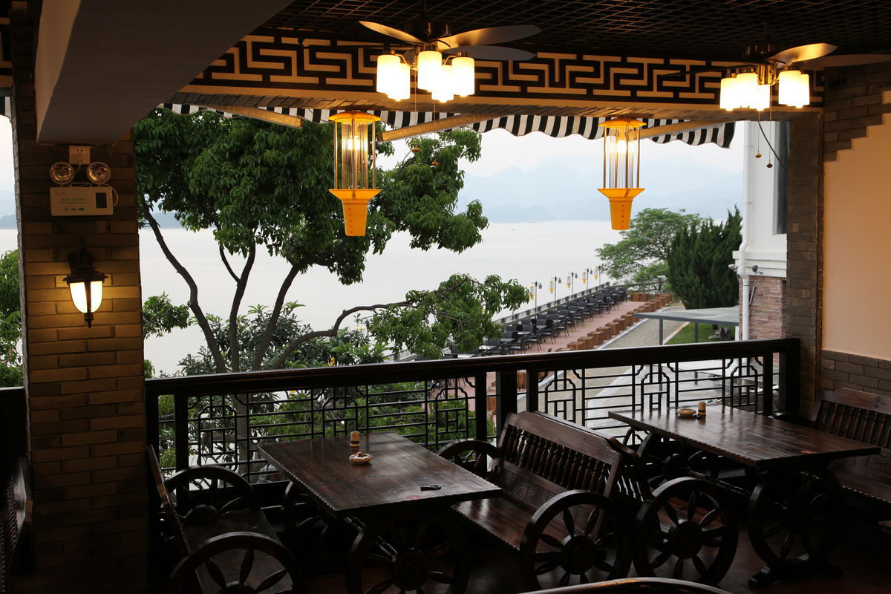
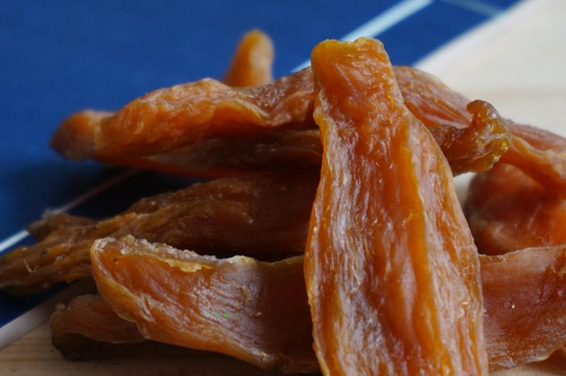

欢迎来品尝千岛湖美食!


欢迎进入千岛湖的美食世界
欢迎进入千岛湖的美食世界
千岛湖美食
最能代表千岛湖的菜非千岛湖鱼头莫属了。 千岛湖的鱼头烹调方法多样，可炖、煮可主，甚至还有一鱼两吃，特别是鱼头熬出来的汤，爽滑可口，油润滑嫩，配料丰富，清香四溢，是到了千岛湖的必点菜肴之一。
山笋 ：千岛湖地处山区，生态环境绝佳。由此，山笋的产量自然不少，千岛湖常见的烹调方法是小炒，在千岛湖家家酒店都少不了。
千岛玉鳖 ：蕨菜是千岛湖重要的的山林野味之一。这里所说的玉鳖其实是就是这个，千岛湖胡很多饭店都有供应。
千岛湖鱼头
山笋
千岛玉鳖
千岛湖特产
千岛湖所在的淳安县山多林茂，各类物产资源丰富。由于山地海拔差异悬殊，地貌复杂多样，垂直气候变化 显著，多层次的立体型气候直接导致物产资源的多样性 、丰富性布局。整个县500多万亩山地，80万亩水域 ，成为天然的物产宝库。堪称是“大自然特色的购物
工艺品:
青溪龙砚 山越麻绣 木制品 茶园石制品
土特产品:
鱼干 高山绿茶 山核桃 猕猴桃 唐村无核柿 红枣皮 野生藕粉 茶园豆腐干 木瓜 蜜枣 农夫山泉 甜玉米
白马地瓜干
淳安猕猴桃

淳安木瓜
千岛湖葛粉
千岛湖水蜜桃
唐村无核柿